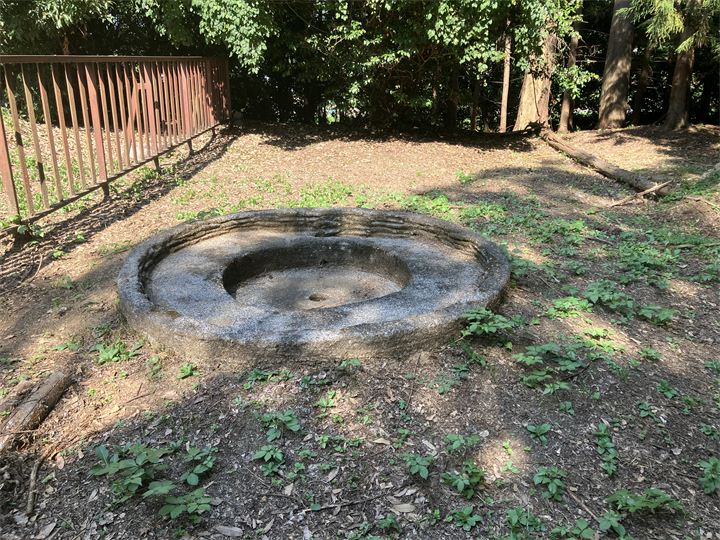
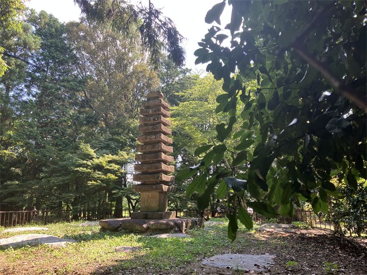

檜隈寺跡
渡来系氏族である東漢氏の氏寺と考えられる古代寺院跡です。 飛鳥時代の国際交流や、大陸文化の影響を感じられる貴重な史跡です。

檜隈寺跡（於美阿志神社）は、飛鳥時代に建立された古代寺院跡と、その跡地に鎮座する神社が残る歴史的な場所です。 檜隈寺は、渡来系氏族である東漢氏（やまとのあやうじ）の氏寺と考えられており、大陸から伝わった文化や技術が飛鳥で発展したことを伝える重要な史跡です。 現在は於美阿志神社の境内として守られ、飛鳥時代の歴史を感じられる場所となっています。
| 営業時間 | 境内自由 |
|---|---|
| 定休日 | なし |
| 料金 | 無料 |
| 所要時間 | 15分 |
| 駐車場 | キトラ古墳周辺地区 第2駐車場 （徒歩2分・無料） |
| アクセス | 近鉄飛鳥駅から徒歩15分。 |
| 地図 | 地図はこちら |

渡来系氏族である東漢氏の氏寺と考えられる古代寺院跡です。 飛鳥時代の国際交流や、大陸文化の影響を感じられる貴重な史跡です。

境内に残る石塔婆は、檜隈寺の歴史を伝える貴重な文化財です。
檜隈寺は、飛鳥時代に檜隈地域で建立された寺院です。 この地域には渡来系氏族である東漢氏が居住し、朝鮮半島や大陸から伝わった技術や文化を飛鳥へ伝える役割を担いました。 その後、寺院跡には於美阿志神社が建立され、現在まで地域の歴史を伝える場所として守られています。